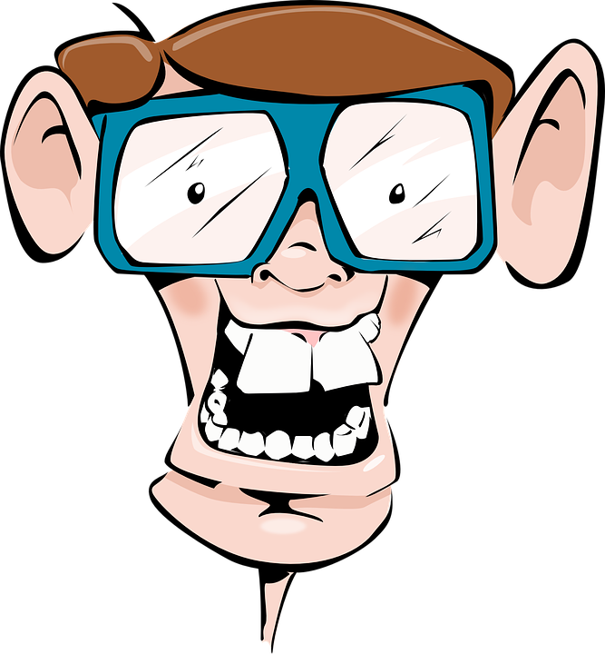

Você é Geek ou Nerd?
Quais são as diferenças entre os 2 termos
Hoje em dia, virou moda todo mundo dizer que é nerd, geek, hipster e outras denominações que ganharam força com o avanço da internet. No caso dos geeks e nerds, ambos os grupos são confundidos constantemente, e muitas pessoas até acham que os dois são
a mesma coisa, talvez pela aparência ou gostos pessoais, que são semelhantes.
Mas tenho uma notícia para você: nerds e geeks, na teoria, não são a mesma coisa. E digo mais: os dois perfis são completamente diferentes um do
outro. Não entendeu? Pois no infográfico abaixo, desenvolvido pelo site Masters In IT (especializado em levantar análises relacionadas a informações tecnológicas), você vai perceber que, de fato, existe um abismo entre um nerd e um geek de
verdade.
Os Nerds

O termo "nerd" foi concebido em 1954 por Theodor Seuss, escritor, poeta e cartunista americano, mais conhecido como Dr. Seuss, que fez uma associação entre a lerdeza e peças de roupa listradas (nas cores branca e azul) para pessoas magras. Basicamente,
um nerd é um personagem cômico, geralmente magrelo, e com alguns problemas cognitivos para determinados assuntos.
Os traços de um nerd incluem diversas características. Entre elas: interesse extremo e obsessivo com livros e
estudos, introversão, dificuldade para se relacionar socialmente; e diversas habilidades mais desenvolvidas devido ao gosto por games, filmes, ciência e computadores. Alguns itens podem incluir o seriado Battlestar Galactica (BSG), Live Action
(na maioria para jogos de RPG), SecondLife, xadrez, fantasia e ficcção científica, programação de PCs e física.
Quanto aos empregos, os nerds costumam se tornar profissionais como cientistas de foguetes, professores particulares, programadores,
engenheiros, TI, inventores ou trabalhar em uma loja de vídeo - muitas vezes visto em alguns seriados de televisão. E claro: quando se fala de "coração", é natural que os nerds namorem com outros nerds.
Os assuntos mais falados entre os
nerds - que parecem se reconhecer de longe! - envolvem conversas um tanto... esquisitas. Como "Existem 2 tipos de pessoas no mundo: aquelas que entendem binário e as que não entendem". Ou "Eu adoraria mudar o mundo, mas ele ainda não me deu
o código fonte". Ou ainda "A caixa dizia que era necessário ter um Windows 95 ou uma versão mais atual. Então, instalei o LINUX". Entendeu?
E filmes? Bem, tratando-se dos nerds, os preferidos deles são: "Senhor dos Anéis", "Pi", "Battlestar
Galactica" - que só será lançado em 2013 -, "Star Trek" e Matrix.
Os Geeks

Diferente da palavra "nerd", a denominação de geek ganhou força, por incrível que pareça, no circo e nas ruas! Os acrobatas, trapezistas e outros artistas performáticos eram popularmente chamados de Geeks pelos locais em que se apresentavam. Posteriormente,
passou-se a designar como "computer geek" aquele que ganha a vida resolvendo bugs de computador.
Mas, o primeiro registro da palavra apareceu em 1976, como sinônimo de "fool" (bobo). Só que a expressão só adquiriu definições
mais positivas na década de 1990, quando a tecnologia ganhou status de poder libertador. Hoje, o termo é mais específico: geeks são aqueles que se atraem por tudo aquilo que é novidade, principalmente quando o assunto são computadores.
Os traços de um geek são mais centrados que os de um nerd. Eles possuem interesses e estilos de vida mais específicos e se tornam experts naquilo que gostam, mas não se enganem, pois muitas vezes, podem se mostrar pretensiosos e cansativos.
Seus gostos pessoais incluem videogames, filmes, colecionar objetos, paixão por gadgets e tecnologia, computação, códigos, hacks, música eletrônica, entre outros. Além disso, costumam usar camisetas com frases irônicas e engraçadas.
As
profissões mais escolhidas pelos geeks podem ser: web designer/desenvolvedor, TI, designer gráfico, designer/desenvolvedor de jogos, marketer, empresário, dono de uma loja de discos, bartender ou até barista em uma loja de café indie - que
os hipsters de plantão com certeza vão saber de quais estou falando. Quanto a namoro, os geeks podem se relacionar tanto com pessoas do mesmo grupo como também os menos fãs da área.
E os assuntos? No geral, geeks são reconhecidos quando
começam a falar sobre os próprios estilos de vida, e discussões que envolvem hábitos "legais" ou referências da cultura pop. Frases como "Não há nada melhor do que sentir o cheiro de um autêntico perfume Malbec" ou "[Enquanto tira o iPhone
do bolso] Deixe-me mostrar meu iPad portátil".
Geeks vs Nerds
De acordo com a pesquisa mostrada no infográfico, 87% das pessoas em todo o mundo são mais adeptas aos geeks do que aos nerds. Além disso, 66% acreditam que "ser geek" é um complemento e 31% acreditam que os geeks possuem grandes chances de serem bem
sucedidos no que fazem. E se você acha isso pouco, fique atento: 23% não se importam de ser chamados de hipster, contra 41% daqueles que se sentem bem com o termo "geek".
41% das pessoas se sentem mais confortáveis ao serem
chamadas de geek, contra 24% das que preferem de nerds. Já no quesito "cognição', 59% dos geeks são mais inteligentes do que aqueles que não são (43%), 48% se mostram obsessivos com certos aspectos da cultura pop - contra 29% dos não-geeks
-, e 47% têm mais chances de se dar bem profissionalmente do que as outras pessoas (28%).
O único quesito em desvantagem é o da interação social, pois 34% desse "biotipo" têm algum tipo de distúrbio nesse universo.
O infográfico completo
pode ser visto aqui. E você, quem acha que ganha essa batalha: os geeks ou os nerds? Depois de ler todas essas informações, em qual grupo acha que se encaixa mais?
Fonte Referência